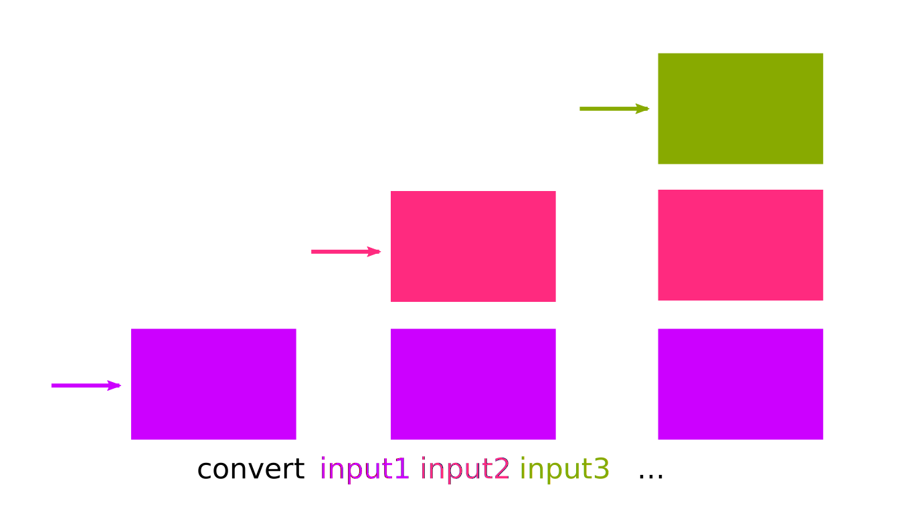
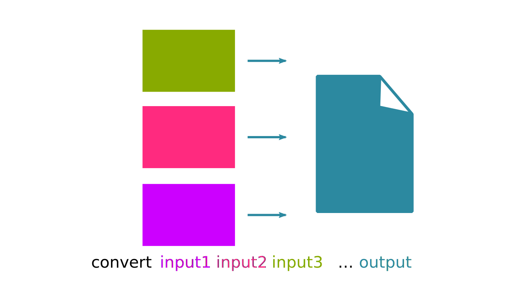
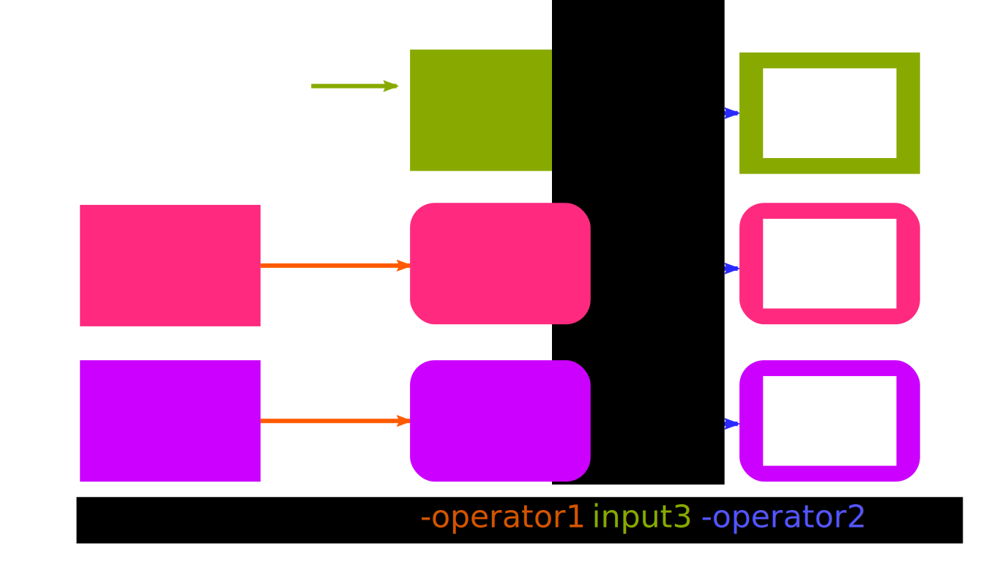
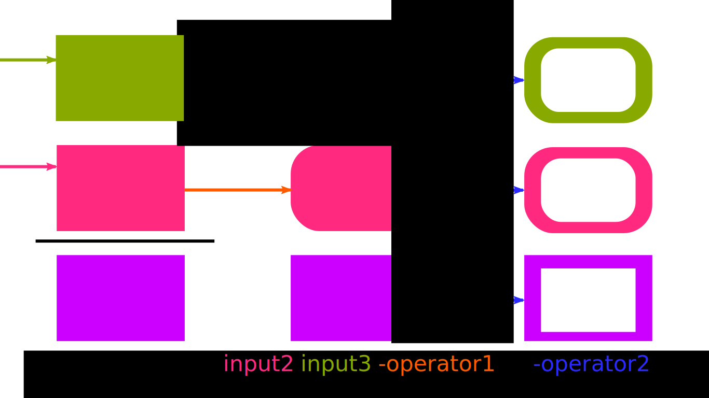
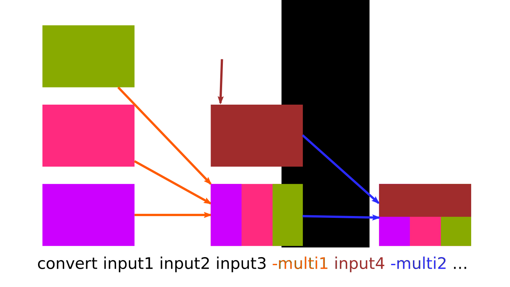
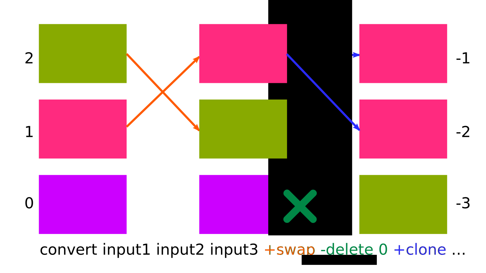

ImageMagick: Graficos con CLI
Intro
¿Gráficos CLI?
Habiendo Grafic User Interfaces (GUI),\ ¿para qué quiero un Command Line Interface?\ ¿No es un oxímoron?
Automatización con scripts:
El original se actualiza y hay que reprocesar\ Hay muchos originales que procesar igual\ Los parámetros del procesado cambian
Conversiones rápidas
Herramientas
Pandoc: Conversión de documentos de texto
Imagemagick: Procesado de imagen
sox: Procesado de audio
ffmpeg: Procesado de video
PDFtk: Manipulación de PDF's
ImageMagick
¿Qué es?
Herramienta de manipulación de imágenes por línea de comandos.
Conjunto de utilidades CLI
animate,
compare,
composite,
conjure,
convert,
display,
identify,
import,
mogrify,
montage,
stream...
Se puede hacer todo con convert,
los otros son alias para indicar
entradas, salidas o opciones.
Incluye una interfaz GUI, bastante cutre.
También hay una libreria C (con bindings Python y demás)
convert: Pipe simple entrada salidadisplay: Visualiza la imagen en el GUIanimate: Visualiza una imagen con animacion en el GUIimport: Captura la pantallaidentify: Identifica el tipo de imagenmogrify: Modifica una imagen inplace (resize, rotate...)composite: Combina imágenes una encima de otracompare: Crea la diferencia de varias imágenesmontage: Genera un montage de varias imágenes dispuestasstream: Procesa linea a linea. útil para imágenes grandesconjure: Interpreta scripts complejos (lenguage msl) :::
Ejemplos simples
## Convertir un png en jpg
convert imagen.png imagen.jpg
## Varios pngs en un gif animado
convert imagen_*.png imagen.gif
## Juntar varios pngs como paginas de un pdf
convert imagen_*.png imagen.pdf
## Renderizar las paginas del pdf por separado
convert documeto.pdf documento-pagina.png
## Genera documento-pagina-N.png, donde N es la página
Ojo: Para partir las páginas de un pdf, normalmente queremos mantener el pdf vectorial. PDFtk para eso. Imagemagic renderiza el raster. :::
Se puede complicar
convert -size 120x160 \
-style italic -weight 600 label:A -negate \
\( +clone -shade 110x90 -normalize -negate +clone \
-compose Plus -composite \) \
\( -clone 0 -shade 110x50 -normalize \
-channel BG -fx 0 +channel -matte \) \
-delete 0 +swap \
-compose Multiply -composite \
button.gif
La documentación explica mucho de cada opción pero es complicado de encontrar la explicación general de como juntar las opciones.
La clave es entender que hay diferentes tipos de opciones y de que tipo es cada una. :::
Elementos de la CLI
Entradas y salidas
Parámetros de configuración
Operadores de imagen
Operadores de múltiples imágenes
Operaciones de pila
Operaciones de canal
Las entradas y salida especifican las fuentes y el destino de imágenes. Pueden ser ficheros o otras cosas. El último parámetro se supone la salida.
Para algunos subcomandos, entrada o salida es implícita
y no se indica (import, display, mogrify...)
Los operadores de imagen modifican las entradas especificadas con anterioridad al operador
Los operadores de múltiples imagenes, juntan de una manera o otra todas las entradas especificadas con anterioridad en una sola imagen.
Las operaciones de pila, permiten acceder a las imágenes anteriores, cambiar su orden...
Los \( paréntesis escapados \) son útiles para limitar las imágenes afectadas
por los operadores.
Las opciones de configuración, modifican valores de parámetros. Afecta a entradas, salidas y operadores especificadas después en la línia de comandos. No les afectan los paréntesis. :::
Entradas
Se añaden a la pila de imagenes.
Lo normal es que sean ficheros de imagen.
Pueden ser dispositivos, entradas virtuales, tener modificadores...
Pueden ser ficheros multiframe (videos o animaciones) o multi-página (pdf's), en ese caso se añade a la pila una imagen por frame/página.
Se puede seleccionar en la entrada un recorte o un frame/página.
Importante: La primera imagen fija los valores por defecto para la mayoría de parámetros: tamaño, profundidad, espacio de colores... :::

Salida

El último parámetro.
Puede ser fichero o otras cosas también:
x: lo muestra por pantalla
- lo envia por salida estandard
printer: lo imprime por la impresora
null ignora la salida
Si el formato de salida soporta múltiples imagenes como frames o páginas (GIF, PDF...) genera un solo fichero.
Si no, genera un fichero por imagen con un sufijo. :::
Operadores de imagen

Son filtros que se aplican imagen a imagen.
Se aplican a todas las imagenes que tengamos en la pila generando nuevas versiones de éstas. :::
Aplicación parcial

Los operadores se aplican solo a las entradas especificadas antes en la línia de comandos.
En este ejemplo:
- El
-operador1, en naranja, no se aplica alinput3 - En cambio, el
-operador2, en azul, se aplica a todos :::
Paréntesis

Se pueden usar los paréntesis
(escapados con contrabarras en bash)
para limitar hacia atrás el alcance de los operadores.
En este otro ejemplo:
- El
-operador1, en naranja, no se aplica alinput1 - En cambio, el
-operador2, en azul, una vez cerrado el paréntesis ya se aplica a todos :::
Ops Multi-imagen

Colapsan las imagenes en una (por justaposición, composición...)
Si están dentro de paréntesis, sólo ve las imágenes que también están dentro.
Podemos aplicar más de uno pero necesitaremos más inputs después de aplicar el primero. :::
Operadores de pila

A menudo el orden de pila es demasiado extricto.
Los operadores de pila alteran la pila directamente, no el contenido de las imágenes.
-clone <indexes> # Crea duplicados encima
-delete <indexes> # Borra de la pila
-insert <index> # Mueve el -1 a <index>
-swap <index>,<index> # Intercambia imagenes
Indices en 0 desde abajo; negativos por arriba.
Secuencias 0,3,7, intérvalos 2-7, por la cola -2
+clone, +delete, +swap es como indicar el o los últimos.
seguiran siendo clones por que les aplicaremos los mismos efectos. :::
Operadores de canal
TODO: Aún no los he entendido
Configuración
Parametrizan la lectura y escritura de imágenes y la aplicación de efectos.
Afectan a los input, outputs, operadores, que aparezcan detrás en la línia de commandos
No hacen nada a la imagen de por sí
‑region <geometry>Limita el efecto de subsiguientes operadores,+regionla elimina‑adjoin‑affine‑alpha‑antialias‑authenticate‑background‑bias‑black‑point‑compensation‑blue‑primary‑bordercolor‑caption‑channel‑comment‑compress‑debug‑define‑delay‑density‑depth‑direction‑display‑dispose‑dither‑encoding‑endian‑extract‑family‑fill‑filter‑font‑format‑fuzz‑geometry‑gravity‑green‑primary‑interlace‑intent‑interpolate‑label‑limit‑linewidth‑log‑loop‑mattecolor‑monitor‑orient‑page‑pointsize‑preview‑quality‑quiet‑read‑mask‑red‑primary‑render‑repage‑sampling‑factor‑scene‑seed‑size‑stretch‑stroke‑strokewidth‑style‑texture‑tile‑transparent‑color‑treedepth‑type‑undercolor‑units‑verbose‑virtual‑pixel‑weight‑write‑mask:::
Entradas y Salida
Tipos
Ficheros (globs y formateo)
Imágenes y patrones built-in
Dispositivos: stdio, pantalla, scanner, impresora...
Frame/página o recorte escogido
Entrada reescalada
Ficheros con formato explicito
Índice de ficheros
Los ficheros de entrada pueden indicarse con globing (frame*.png) que se resuelve a parte del propio globbing de bash.
Por eso, si añadimos modificadores de entrada al fichero, el globbing sigue funcionando.
Los ficheros de salida pueden ir con template de formateo tipo printf (frame_%03d.jpg) para las salidas múltiples.
Por defecto si la salida es frame.jpg y hay más de una entrada, genera los nombres con frame-%d.jpg,
sin cero padding que es complicado de ordenar.
:::
Imágenes built-in
{style="width:40%"}
Muy útiles para hacer pruebas.
logo:el logo de imagemagickrose:una foto de una rosagranite:una texturanetscape:paleta de colores seguros de netscape-
wizard:otra imagen de la mascota -
pattern:checkerboardcuadros ajedrez pattern:bricksladrilloscanvas:<color>todo de un color (necesita -size)gradient:[<color>-<color>]gradiente vertical (necesita -size)aradial-gradient:[<color>-<color>]grandientefractal:[<color>-<color>]generador texturas (necesita -size)plasma:generador texturas (el mismo quefractal?)label:<text>linia de textocaption:<text>texto wrappeadotile:<image>Expande la imagen al size replicándola :::
Dispositivos
- stdin/out
x: de input captura la pantalla (como import)
x: de output muestra por pantalla (como display)
scan: entrada desde el scaner
printer: salida a impresora
fd:<n> file descriptor
null salida ignorada
Formato Explícito
Normalmente se interpreta por el MAGIC de la entrada o por la extensión de la salida.
# saca por pantalla formato XPM
# (Codigo C valido en el que se 've' la imagen en asci art)
convert rose: xpm:-
# Para ver los formatos soportados
convert -list format
El MAGIC es una cadena de texto identificadora que incluyen la mayoria de formatos modernos para identificar el formato: GIF, BMP, PNG...
# Lista de MAGICS
convert -list magic
# Lista de formatos soportados
convert -list format
# Lista de listas
convert -list list
Crop/Resize/Framing
Se puede hacer después con operadores
# Resize
convert '*.jpg[120x120]' thumbnail.png
# Subimagen con offset
convert '*.jpg[200x200+100+900]' thumbnail.png
# Escoger los frames
convert '*.gif[1,3-6]' thumbnail.png
Pero es mas rápido hacerlo al leer
Detalle: los cochetes planos son símbolos especiales en bash y hay que usar comillas simples o dobles.
Detalle 2: En bash las comillas simples evitan el globing. Es ImageMagick, no bash, quien hace el globbing. Bash no sabría con los modificadores ahí. Tampoco con prefijos de formato explícito. :::
Fichero con lista de nombres
cat > ficheros.txt <<<EOF
fichero1.jpg
fichero2.jpg
otrofichero.jpg
EOF
convert @ficheros.txt -o salida.gif
Opciones
Tipos de opciones
Configuración
Operadores de imagen
Operadores multi-imagen
Operadores de pila
Configuración
Parametrizan la lectura y escritura de imágenes y la aplicación de efectos.
Afectan a los input, outputs, operadores, que aparezcan detrás en la línia de commandos
No hacen nada a la imagen de por sí
‑adjoin ‑affine ‑alpha ‑antialias ‑authenticate ‑background ‑bias ‑black‑point‑compensation ‑blue‑primary ‑bordercolor ‑caption ‑channel ‑comment ‑compress ‑debug ‑define ‑delay ‑density ‑depth ‑direction ‑display ‑dispose ‑dither ‑encoding ‑endian ‑extract ‑family ‑fill ‑filter ‑font ‑format ‑fuzz ‑geometry ‑gravity ‑green‑primary ‑interlace ‑intent ‑interpolate ‑label ‑limit ‑linewidth ‑log ‑loop ‑mattecolor ‑monitor ‑orient ‑page ‑pointsize ‑preview ‑quality ‑quiet ‑read‑mask ‑red‑primary ‑region ‑render ‑repage ‑sampling‑factor ‑scene ‑seed ‑size ‑stretch ‑stroke ‑strokewidth ‑style ‑texture ‑tile ‑transparent‑color ‑treedepth ‑type ‑undercolor ‑units ‑verbose ‑virtual‑pixel ‑weight ‑write‑mask :::
Operaciones de imagen
Filtros: modifican una imagen generando otra
Se aplica a todas las entradas especificadas antes\ (si no está dentro de un parèntesis)
$ convert input1 -op1 input2 -op2 ...
# src0: input1 | op1 | op2
# src1: input2 | op2
$ convert input1 -op1 \( input2 -op2 \) -op3 ...
# src0: input1 | op1 | op3
# src1: input2 | op2 | op3
‑annotate ‑black‑threshold ‑blur ‑border ‑charcoal ‑chop ‑clip ‑clip‑path ‑clip‑mask ‑colors ‑colorize ‑colorspace ‑compose ‑contrast ‑convolve ‑crop ‑cycle ‑despeckle ‑draw ‑edge ‑emboss ‑enhance ‑equalize ‑evaluate ‑extent ‑flip ‑flop ‑floodfill ‑frame ‑gamma ‑gaussian‑blur ‑grayscale ‑implode ‑lat ‑level ‑map ‑median ‑modulate ‑monochrome ‑negate ‑noise ‑normalize ‑opaque ‑ordered‑dither ‑paint ‑posterize ‑raise ‑profile ‑radial‑blur ‑raise ‑random‑threshold ‑resample ‑resize ‑roll ‑rotate ‑sample ‑scale ‑sepia‑tone ‑segment ‑shade ‑shadow ‑sharpen ‑shave ‑shear ‑sigmoidal‑contrast ‑solarize ‑splice ‑spread ‑strip ‑swirl ‑threshold ‑transparent ‑thumbnail ‑tint ‑transform ‑trim ‑unsharp ‑version ‑wave ‑white‑point ‑white‑threshold :::
Oper. Multi-imàgen
¿Qué hacemos con múltiples entradas?
Por defecto, Junta las entradas anteriores en una. Indican que hacer con múltiples entradas.
Por defecto si es un gif, pdf o video, los toma como frames o páginas, si no, genera múltiples ficheros con sufijo numérico.
-append: junta las imagenes de norte a sur\
+append: junta las imagenes de izquierda a derecha\
-composite: mezcla las imagenes con el setting -compose
‑append ‑affinity ‑average ‑clut ‑coalesce ‑combine ‑compare ‑complex ‑composite ‑copy ‑crop ‑debug ‑deconstruct ‑delete ‑evaluate‑sequence ‑fft ‑flatten ‑fx ‑hald‑clut ‑ift ‑identify ‑insert ‑layers ‑limit ‑map ‑maximum ‑minimum ‑morph ‑mosaic ‑optimize ‑print ‑process ‑quiet ‑swap ‑write :::
Operaciones de pila
-clone <indexes> # Duplica las imagenes, +clone la última
-delete <indexes> #
-insert <indexes> #
-swap <index>,<index> # Intercambia imagenes, +swap las dos ultimas
secuencias 1,3,7, intérvalos 2-7, por la cola -2
+operador implica -1, la útlima imagen
Los otros operadores cogen la última imagen o las últimas imagenes.
Estos se saltan la lógica de pila y acceden directamente a su contenido.
+clone y +swap dentro de paréntesis para procesar múltiples veces una imagen